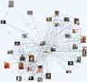

Myspace Friend Maps
Ok, I have a seceret: I am a Myspace sellout. Everyone around me was like ooh yea, check out my myspace! Or Ooo, your myspace is sooo cool. Or, Wow, your myspace cures cancer. Well, so I made one, and added friends. I soon realized that Myspace.com is interesting. (Although it sucks too. Ads everywhere, people’s pages are often littered with cpu sucking garbage and animated gifs and crappy css.)
But the Myspace chain bullitens or picture comments are not what makes Myspace.com interesting. Its is the social network map that is what is interesting. But how can I see the big picture? And what does it look like? In my search on how to do this, I came across Ben Discoe’s website and read about his work with a similar website: friendster. I decided on a similar approach.
First, because I do not have direct access to Myspace.com’s database of friends, I would have to create my own local database, and then write a spider to crawl around and populate it. So I did. I wrote it in what I know best, are you ready people: bash scripting. You can look at it for yourself in the download below, its called myspace.robot. Basically it parses a myspace profile, grabs friends, pictures, music, interests, as much information that can be harvested, and then inserts it into the database. This robot is called by other scripts that say oh, pick a random profile. Or I have a robot caller that calls in a tree like fashion, starting at a given place and traversing so many levels (myspace.tree).
Once I have the information (friends in particular). We can use this information to create a map. At first I used imagemagick to generate an image. It sucked.
It took me a while to find graphviz.
{kind=link}
Graphviz is the perfect tool for the job. I feed it the nodes, and weights between nodes. It calculated the best positions to put the nodes. It is very configurable, including different ploting algorithms, graph styles, and output formats. It take all of this and put it into a php-mysql interface for others to input their graph-making requests. My server on the backend takes the top one on the queue, grabs the appropriate profiles, creates the friend-map, then sends an email to let the user know that the map is ready!
A simple map that includes you and your friends turns out to be pretty large. If you want to go any deeper than that you have to use svg. (bitmaps turn very large.) But how does the program know where to put each friend, realative to the other friends in the map? Answer: It uses the “howgoodofafriendareyou” metric. The more friends you have in common with another person, the better a friend you are. I’ll have the link up in a while for the interface for others to make their own maps. You might be interested to see who myspace thinks their closest friend is.
Comment via email